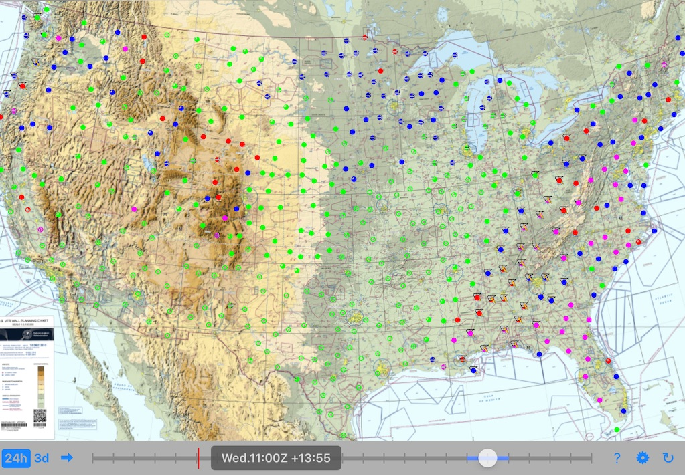
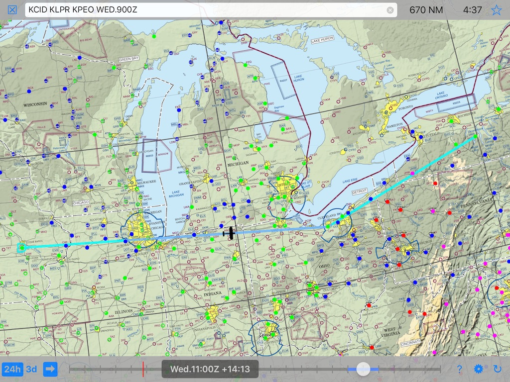

| Source | Forecast Period | Issuing Interval | Actual Outlook |
|---|---|---|---|
| TAF | 24 hours | 6 hours | 18-24 hours |
| Prog Charts | 24 hours | 6 hours | 12-18 hours |
| G-AIRMET | 12 hours | 6 hours | 6-12 hours |
| LAMP | 24 hours | 1 hour | 23-24 hours |
| MOS | 66 hours | 6 hours | 60-66 hours |
As you can see from this chart, the typical NWS preflight weather sources: TAF, Prog Charts and G-AIRMET are of limited help making sure you can get home tomorrow if you fly somewhere today.
The NWS does have detailed forecast data for over 1500 airports in the lower-48 states called LAMP and MOS. LAMP cover the next 24 hours and MOS covers the next 2 ½ days. Unfortunately the NWS hasn't created an easy way to see LAMP or MOS forecasts. NOAA does let you view LAMP and MOS one airport at a time, whereas Weekend Flyer takes the LAMP and MOS data and visualizes your entire route.
All of the significant weather information is shown on a single screen. The flight categories are shown with color, cloud coverage with pie chart symbols, high winds are shown with a blowing swirl icon and thunderstorms are shown with an anvil cloud and lightning. The map behind the weather symbols is the VFR Wall Planner you often see at airports.

The screen above is showing the forecast for Wednesday 11:00Z. Changing the forecast time is done by sliding the thumb along the time control 'slider' on the bottom of the screen. The app animates the weather smoothly on even older iPads.

You can also plan your route and even set a departure time to 'simulate' your flight before you depart. Now when you change the time using the slider the airplane symbol shows where you expect to be at that time and the weather you will likely encounter.

Free one month trial. After the trial continue to use flight planning features for free. Purchase additonal weather forecasting by the month for $0.99 or purchase weather forecasting forever for $19.99.
| Copyright © 2017 | Thomas Court Software Development, LLC | All Rights Reserved |